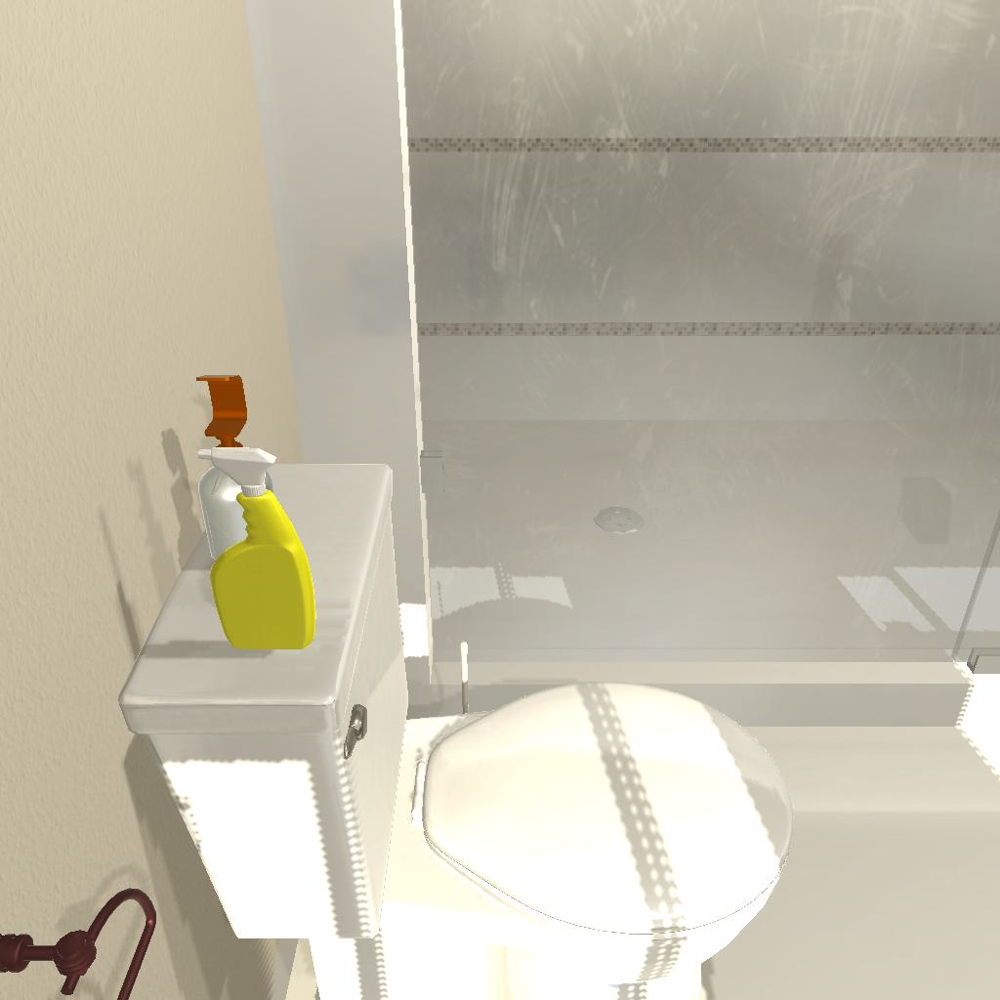

---------------------------------------------------------task: 28---------------------------------------------------------
--------------------------------------------------------------------------------------------------------------------------------------------------------------------
--------------------------------------------------------------------------------------------------------------------------------------------------------------------
Step:--------------------------------------------------------------------------9-------------------------------------------------------------------------------
----------------------------------------
VLM Prompt:
Image1:
Image2:
Image3:
**Instruction**
1. Analyze the provided images to identify all visible household objects and compare the difference between images (e.h. whether the object is opened or not and taken on hand or not), focusing on those relevant to the task description "put two spraybottle in toilet."
2. Use the analysis of images and the task hint "The agent must find an object of the desired type, pick it up, find the correct location to place it, put it down there, then look for another object of the desired type, pick it up, return to previous location, and put it down there with the other object." to answer the question: what is the most reasonable action in the choices for the task description "put two spraybottle in toilet"?
3. Decide and write the answer using the template: The answer is: (i): , where i is the real number. If there is no desired object in images, search every place based on **Initial Observation** to find the object. And if no one is exactly correct, choose a similar answer.
**Initial Observation**
You are in the middle of a room. Looking quickly around you, you can see bathtub (1), bathtubbasin (1), cart (1), sink (1), garbagecan (1), sinkbasin (1), countertop (1), drawer (1-4), toilet (1), toiletpaperhanger (1)
**Answer Choices**
(1): go to bathtub 1
(2): go to bathtubbasin 1
(3): go to cart 1
(4): go to sink 1
(5): go to garbagecan 1
(6): go to sinkbasin 1
(7): go to countertop 1
(8): go to drawer 1
(9): go to drawer 2
(10): go to drawer 3
(11): go to drawer 4
(12): go to toiletpaperhanger 1
(13): take showerdoor 1 from toilet 1
(14): take soapbottle 1 from toilet 1
(15): examine toilet 1
**Answer**
Let's think step by step by following the instructions.
----------------------------------------
----------------------------------------
Original Response:
First, we analyze the provided images to identify all visible household objects. In all three images, we can see a spray bottle on the countertop next to the toilet. There do not appear to be any other objects relevant to the task description in the images.
Next, we use the analysis of images and the task hint to determine the most reasonable action. Since the task is to "put two spraybottle in toilet," and we can see one spray bottle already next to the toilet on the countertop, the most reasonable action would be to pick up this spray bottle and place it in the toilet as it is the closest object of the desired type. However, none of the provided answer choices include this action.
Since there is no action that directly corresponds to picking up the spray bottle and placing it in the toilet, we must choose the next best action based on the initial observation. The initial observation mentions a "countertop (1)" which is where the spray bottle is located in the images. Therefore, the most suitable action from the given choices would be to go to the countertop and then proceed to pick up the spray bottle.
The answer is: (7): go to countertop 1.
----------------------------------------
----------------------------------------
>>> Refine Original VLM Response and Get Pure Action: go to countertop 1
----------------------------------------
-----------------------------------------------------------------
Running time: 10.925373077392578 seconds
Total Money: 17.777009999999983
-----------------------------------------------------------------
-----------------------------------------------------------------
Text Observation:You arrive at loc 6. On the countertop 1, you see a tissuebox 1, a toiletpaper 1, a handtowel 1, and a candle 1.
-----------------------------------------------------------------
UNSUCCEED